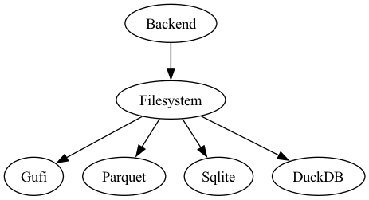

Backends
Backends connect users to DSI Core middleware and allow DSI middleware data structures to read and write to persistent external storage.
Backends are modular to support user contribution, and users are encouraged to offer custom backend abstract classes and backend implementations.
A contributed backend abstract class may extend another backend to inherit the properties of the parent.
In order to be compatible with DSI core middleware, backends need to interface with Python built-in data structures and with the Python collections library.
Note that any contributed backends or extensions must include unit tests in backends/tests to demonstrate new Backend capability.
We can not accept pull requests that are not tested.
{kind=link}

Figure depicts the current DSI backend class hierarchy.
SQLite
- class dsi.backends.sqlite.Sqlite(filename)
SQLite Filesystem Backend to which a user can ingest/process data, generate a Jupyter notebook, and find occurences of a search term
- __init__(filename)
Initializes a SQLite backend with a user inputted filename, and creates other internal variables
- check_type(input_list)
Users should not use this function. Only used by internal sqlite functions
Evaluates a list and returns the predicted compatible SQLite Type
input_list: list of values to evaluate
return: string description of the list’s SQLite data type
- close()
Closes the SQLite database’s connection.
return: None
- display(table_name, num_rows=25, display_cols=None)
Prints data of a specified table from this SQLite backend.
table_name: table whose data is printed
num_rows: Optional numerical parameter limiting how many rows are printed. Default is 25.
display_cols: Optional parameter specifying which columns in table_name to display. Must be a Python list object
- find(query_object)
Function that finds all instances of a query_object in a SQLite database. This includes any partial hits if query_object is part of a table/col/cell
query_object: Object to find in this database. Can be of any type (string, float, int).
return: List of ValueObjects if there is a match. Else returns tuple of empty ValueObject() and an error message.
Note: Return list can have ValueObjects with different structure due to table/column/cell matches having different value variables
Refer to other find functions (table, column and cell) to clearly understand each one’s ValueObject structure
- find_cell(query_object, row=False)
Function that finds all cells that match the query_object. This includes any partial hits if the query_object is part of a cell value
query_object: Object to find in all cells. Can be of any type (string, float, int).
row: default is False. Set to True, if want to return whole row where there is a match between a cell and query_object
return: List of ValueObjects if there is a match.
Structure of ValueObjects for this function:
t_name: string of table name
c_name: list of column names.
row = True, list is all columns in this table
row = False, list is one item – column of cell that matched query_object
value:
row = True, list of whole row where a cell matches query_object
row = False, value of the cell that matches query_object
row_num: row number of the cell that matched
type:
row = True, ‘row’
row = False, ‘cell’
- find_column(query_object, range=False)
Function that finds all columns whose name matches the query_object. This includes any partial hits if the query_object is part of a column name
query_object: Object to find in all column names. HAS TO BE A STRING
range: default is False. If True, min/max of a numerical column that matches query_object is included, not column data.
return: List of ValueObjects if there is a match.
Structure of ValueObjects for this function:
t_name: string of table name
c_name: list of one, which is the name of the matching column
value:
range = True, [min, max] of the column
range = False, column data as a list
row_num: None
type:
range = True, ‘range’
range = False, ‘column’
- find_table(query_object)
Function that finds all tables whose name matches the query_object. This includes any partial hits if the query_object is part of a table name
query_object: Object to find in all table names. HAS TO BE A STRING
return: List of ValueObjects if there is a match.
- Structure of ValueObjects for this function:
t_name: string of table name
c_name: list of all columns in matching table
value: table’s data as a list of lists (each row is a list)
row_num: None
type: ‘table’
- ingest_artifacts(collection, isVerbose=False)
Primary function to ingest a collection of tables into the defined SQLite database.
Creates the auto generated runTable if flag set to True when setting up a Core.Terminal workflow Creates dsi_units table if there are units for ingested data values.
Can only be called if a SQLite database is loaded as a BACK-WRITE backend (check
core.pyfor distinction)collection: A Python Collection of several tables and their data structured as a nested Ordered Dictionary.
isVerbose: default is False. Flag to print all insert table SQLite statements
return: None when stable ingesting. When errors occur, returns a tuple of (ErrorType, error message). Ex: (ValueError, “this is an error”)
- ingest_table_helper(types, foreign_query=None, isVerbose=False)
Users do not interact with this function and should ignore it. Called within ingest_artifacts()
Helper function to create SQLite table based on a passed in schema.
types: DataType derived class that defines the string name, properties (dictionary of table names and table data), and units for each column in the schema.
foreign_query: defaut is None. It is a SQLite string detailing the foreign keys in this table
isVerbose: default is False. Flag to print all create table SQLite statements
return: none
- list()
Return a list of all tables and their dimensions from this SQLite backend
- notebook(interactive=False)
Generates a Jupyter notebook displaying all the data in the specified SQLite database.
To account for multiple tables, the database is stored as a list of dataframes, where each table is a dataframe.
If database has table relations, it is stored as a separate dataframe. If database has a units table, each table’s units are stored in its corresponding dataframe attrs variable
interactive: default is False. When set to True, creates an interactive Jupyter notebook, otherwise creates an HTML file.
return: None
- num_tables()
Prints number of tables in this backend
- process_artifacts(only_units_relations=False, isVerbose=False)
Reads in data from the SQLite database into a nested Ordered Dictionary, where keys are table names and values are Ordered Dictionary of table data. If there are PK/FK relations in a database it is stored in a table called dsi_relations.
Can only be called if a loaded SQLite database is a BACK-READ backend in a Core.Terminal workflow (check core.py for distinction)
only_units_relations: default is False. USERS SHOULD IGNORE THIS FLAG. Used by an internal sqlite.py function.
isVerbose: default is False. When set to True, prints all SQLite queries to select data and store in abstraction
return: Nested Ordered Dictionary of all data from the SQLite database
- process_units_helper()
Users do not interact with this function and should ignore it. Called within process_artifacts()
Helper function to create the SQLite database’s units table as an Ordered Dictionary. Only called if dsi_units table exists in the database.
return: units table as an Ordered Dictionary
- put_artifacts_t(collection, tableName='TABLENAME', isVerbose=False)
DSI 1.0 FUNCTIONALITY - DEPRECATING SOON, DO NOT USE
Primary class for insertion of collection of Artifacts metadata into a defined schema, with a table passthrough
collection: A Python Collection of an Artifact derived class that has multiple regular structures of a defined schema, filled with rows to insert.
tableName: A passthrough to define a table and set the name of a table
return: none
- query_artifacts(query, isVerbose=False, dict_return=False)
Function that returns data from a SQLite database based on a specified SQL query. Data returned varies based on the dict_return flag explained below.
query: Must be a SELECT or PRAGMA query. If dict_return is True, then this can only be a simple query on one table, NO JOINS. Query CAN create new aggregate columns such as COUNT to include in the result regardless of dict_return.
isVerbose: default is False. Flag to print all Select table SQLite statements
dict_return: default is False. When set to True, return type is an Ordered Dict of data from the table specified in query.
return:
When query is of correct format and dict_return = False, returns a Pandas dataframe of that table’s data
When query is of correct format and dict_return = True, return an Ordered Dictionary of data for the table specified in query
When query is incorrect, return a tuple of (ErrorType, error message). Ex: (ValueError, “this is an error”)
- summary(table_name=None, num_rows=0)
Prints data and numerical metadata of tables from this SQLite backend. Output varies depending on parameters
table_name: default is None. When specified only that table’s numerical metadata is printed. Otherwise every table’s numerical metdata is printed
num_rows: default is 0. When specified, data from the first N rows of a table are printed. Otherwise, only the total number of rows of a table are printed. The tables whose data is printed depends on the table_name parameter.
- summary_helper(table_name)
Users should not call this function
Helper function to generate the summary of tables in this SQLite database.
- table_print_helper(headers, rows, max_rows=25)
Users should not call this function
Helper function to print table data/metdata cleanly
- class dsi.backends.sqlite.ValueObject
Data Structure used when returning search results from
find,find_table,find_column, orfind_cellt_name: table name
c_name: column name as a list. The length of the list varies based on the find function. Read the description of each one to understand the differences
row_num: row number. Is useful when finding a value in
find_cellorfind(which includes results fromfind_cell)type: type of match for this specific ValueObject. {table, column, range, cell, row}
DuckDB
- class dsi.backends.duckdb.DuckDB(filename)
DuckDB Filesystem Backend to which a user can ingest/process data, generate a Jupyter notebook, and find occurences of a search term
- __init__(filename)
Initializes a DuckDB backend with a user inputted filename, and creates other internal variables
- check_type(input_list)
Users should not use this function. Only used by internal DuckDB functions
Evaluates a list and returns the predicted compatible DuckDB Type
input_list: list of values to evaluate
return: string description of the list’s DuckDB data type
- close()
Closes the DuckDB database’s connection.
return: None
- display(table_name, num_rows=25, display_cols=None)
Prints data of a specified table from this DuckDB backend.
table_name: table whose data is printed
num_rows: Optional numerical parameter limiting how many rows are printed. Default is 25.
display_cols: Optional parameter specifying which columns in table_name to display. Must be a Python list object
- find(query_object)
Function that finds all instances of a query_object in a DuckDB database. This includes any partial hits if query_object is part of a table/col/cell
query_object: Object to find in this database. Can be of any type (string, float, int).
return: List of ValueObjects if there is a match. Else returns tuple of empty ValueObject() and an error message.
Note: Return list can have ValueObjects with different structure due to table/column/cell matches having different value variables
Refer to other find functions (table, column and cell) to clearly understand each one’s ValueObject structure
- find_cell(query_object, row=False)
Function that finds all cells that match the query_object. This includes any partial hits if the query_object is part of a cell value
query_object: Object to find in all cells. Can be of any type (string, float, int).
row: default is False. Set to True, if want to return whole row where there is a match between a cell and query_object
return: List of ValueObjects if there is a match.
Structure of ValueObjects for this function:
t_name: string of table name
c_name: list of column names.
row = True, list is all columns in this table
row = False, list is one item – column of cell that matched query_object
value:
row = True, list of whole row where a cell matches query_object
row = False, value of the cell that matches query_object
row_num: row number of the cell that matched
type:
row = True, ‘row’
row = False, ‘cell’
- find_column(query_object, range=False)
Function that finds all columns whose name matches the query_object. This includes any partial hits if the query_object is part of a column name
query_object: Object to find in all column names. HAS TO BE A STRING
range: default is False. If True, min/max of a numerical column that matches query_object is included, not column data.
return: List of ValueObjects if there is a match.
Structure of ValueObjects for this function:
t_name: string of table name
c_name: list of one, which is the name of the matching column
value:
range = True, [min, max] of the column
range = False, column data as a list
row_num: None
type:
range = True, ‘range’
range = False, ‘column’
- find_table(query_object)
Function that finds all tables whose name matches the query_object. This includes any partial hits if the query_object is part of a table name
query_object: Object to find in all table names. HAS TO BE A STRING
return: List of ValueObjects if there is a match.
- Structure of ValueObjects for this function:
t_name: string of table name
c_name: list of all columns in matching table
value: table’s data as a list of lists (each row is a list)
row_num: None
type: ‘table’
- ingest_artifacts(collection, isVerbose=False)
Primary function to ingest a collection of tables into the defined DuckDB database.
Creates the auto generated runTable if flag set to True when setting up a Core.Terminal workflow Creates dsi_units table if there are units for ingested data values.
Can only be called if a DuckDB database is loaded as a BACK-WRITE backend (check
core.pyfor distinction)collection: A Python Collection of several tables and their data structured as a nested Ordered Dictionary.
isVerbose: default is False. Flag to print all insert table DuckDB statements
return: None when stable ingesting. When errors occur, returns a tuple of (ErrorType, error message). Ex: (ValueError, “this is an error”)
- ingest_table_helper(types, foreign_query=None, isVerbose=False)
Users do not interact with this function and should ignore it. Called within ingest_artifacts()
Helper function to create DuckDB table based on a passed in schema.
types: DataType derived class that defines the string name, properties (dictionary of table names and table data), and units for each column in the schema.
foreign_query: defaut is None. It is a DuckDB string detailing the foreign keys in this table
isVerbose: default is False. Flag to print all create table DuckDB statements
return: none
- list()
Return a list of all tables and their dimensions from this DuckDB backend
- num_tables()
Prints number of tables in this backend
- process_artifacts(only_units_relations=False, isVerbose=False)
Reads in data from the DuckDB database into a nested Ordered Dictionary, where keys are table names and values are Ordered Dictionary of table data. If there are PK/FK relations in a database it is stored in a table called dsi_relations.
Can only be called if a loaded DuckDB database is a BACK-READ backend (check core.py for distinction)
only_units_relations: default is False. USERS SHOULD IGNORE THIS FLAG. Used by an internal sqlite.py function.
isVerbose: default is False. When set to True, prints all DuckDB queries to select data and store in abstraction
return: Nested Ordered Dictionary of all data from the DuckDB database
- process_units_helper()
Users do not interact with this function and should ignore it. Called within process_artifacts()
Helper function to create the DuckDB database’s units table as an Ordered Dictionary. Only called if dsi_units table exists in the database.
return: units table as an Ordered Dictionary
- query_artifacts(query, isVerbose=False, dict_return=False)
Function that returns data from a DuckDB database based on a specified SQL query. Data returned varies based on the dict_return flag explained below.
query: Must be a SELECT or PRAGMA query. If dict_return is True, then this can only be a simple query on one table, NO JOINS. Query CAN create new aggregate columns such as COUNT to include in the result regardless of dict_return.
isVerbose: default is False. Flag to print all Select table DuckDB statements
dict_return: default is False. When set to True, return type is an Ordered Dict of data from the table specified in query.
return:
When query is of correct format and dict_return = False, returns a Pandas dataframe of that table’s data
When query is of correct format and dict_return = True, return an Ordered Dictionary of data for the table specified in query
When query is incorrect, return a tuple of (ErrorType, error message). Ex: (ValueError, “this is an error”)
- summary(table_name=None, num_rows=0)
Prints data and numerical metadata of tables from this DuckDB backend. Output varies depending on parameters
table_name: default is None. When specified only that table’s numerical metadata is printed. Otherwise every table’s numerical metdata is printed
num_rows: default is 0. When specified, data from the first N rows of a table are printed. Otherwise, only the total number of rows of a table are printed. The tables whose data is printed depends on the table_name parameter.
- summary_helper(table_name)
Users should not call this function
Helper function to generate the summary of tables in this DuckDB database.
- table_print_helper(headers, rows, max_rows=25)
Users should not call this function
Helper function to print table data/metdata cleanly
- class dsi.backends.duckdb.ValueObject
Data Structure used when returning search results from
find,find_table,find_column, orfind_cellt_name: table name
c_name: column name as a list. The length of the list varies based on the find function. Read the description of each one to understand the differences
row_num: row number. Is useful when finding a value in
find_cellorfind(which includes results fromfind_cell)type: type of match for this specific ValueObject. {table, column, range, cell, row}
SQLAlchemy
GUFI
- class dsi.backends.gufi.Gufi(prefix, index, dbfile, table, column, verbose=False)
GUFI Datastore
- __init__(prefix, index, dbfile, table, column, verbose=False)
prefix: prefix to GUFI commands
index: directory with GUFI indexes
dbfile: sqlite db file from DSI
table: table name from the DSI db we want to join on
column: column name from the DSI db to join on
verbose: print debugging statements or not
- query_artifacts(query)
Retrieves GUFI’s metadata joined with a dsi database query: an sql query into the dsi_entries table
Parquet
- class dsi.backends.parquet.Parquet(filename, **kwargs)
Support for a Parquet back-end.
Parquet is a convenient format when metadata are larger than SQLite supports.
- __init__(filename, **kwargs)
- static get_cmd_output(cmd: list) str
Runs a given command and returns the stdout if successful.
If stderr is not empty, an exception is raised with the stderr text.
- ingest_artifacts(collection)
Ingest artifacts into file at filename path.
- notebook(collection, interactive=False)
Generate Jupyter notebook of Parquet data from filename.
- query_artifacts()
Query Parquet data from filename.